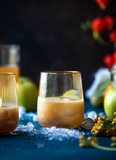

Caramel Apple Cocktail

Description
This is a recipe for a Caramel Apple Cocktail that I made in college after visiting an apple orchard.
It's perfect for a chilly fall night and can be served warm as well as cold.
Ingredients
- Smirnoff Kissed Caramel Vodka
- Seasonal Fresh-pressed Apple Cider, local if possible
Steps
- Chill your vodka.
- Chill and thoroughly shake your cider.
- Mix your drink with a 1:2 ratio of vodka to cider.
- Enjoy!